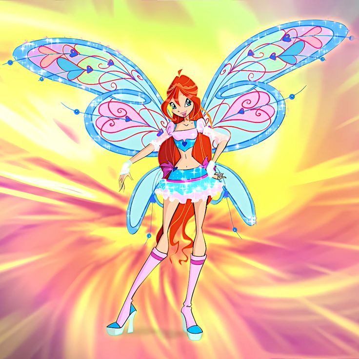
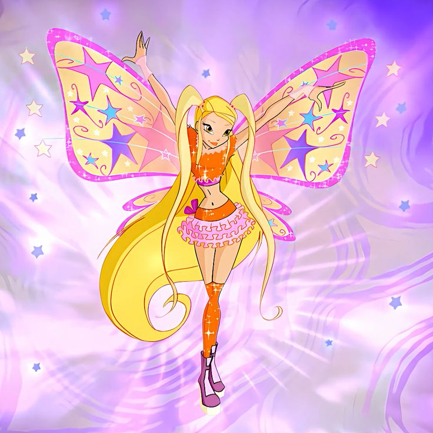
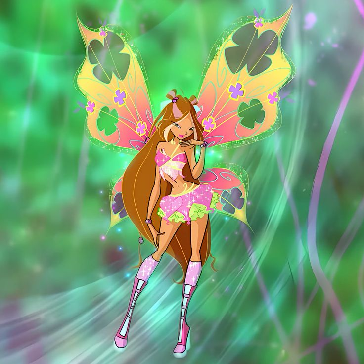
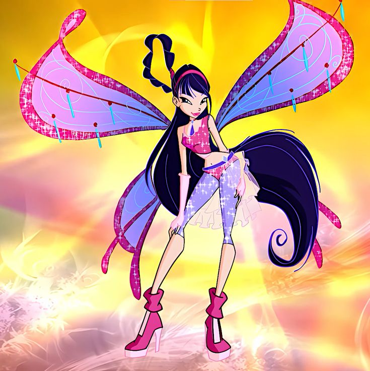
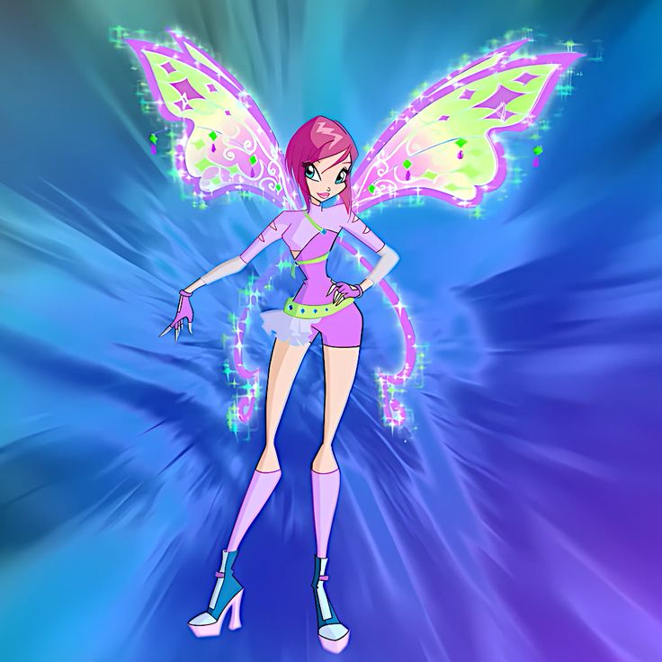
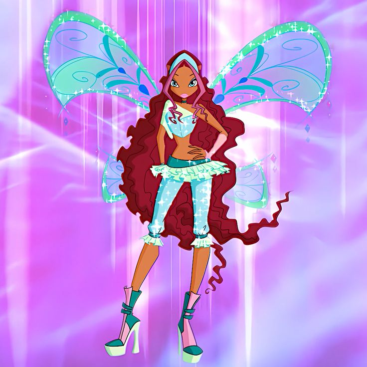

Fada da Chama do Dragão, é a líder do grupo. Vem da Terra, mas descobre que é a princesa de Domino, um reino perdido. É corajosa, justa e tem um coração enorme.

Fada da Luz, adora moda, brilho e diversão. Vem de Solária e é cheia de energia. Leal às amigas, espalha alegria e confiança por onde passa.

Fada da Natureza, doce e gentil, tem um coração puro e ama todas as formas de vida. Vem de Linphea e usa seu poder para proteger o equilíbrio natural.

Fada da Música, vive com ritmo no coração. Criativa e intensa, expressa seus sentimentos através do som. Vem de Melody e valoriza a sinceridade e a liberdade.

Fada da Tecnologia, lógica e determinada. Ama resolver problemas e criar invenções incríveis. Vem de Zenith e acredita que a razão e o coração devem andar juntos.

Fada das Ondas, valente e aventureira. Vem de Andros e domina o poder da fluidez e do movimento. É forte, leal e nunca abandona quem ama.
💫
🫧
✨